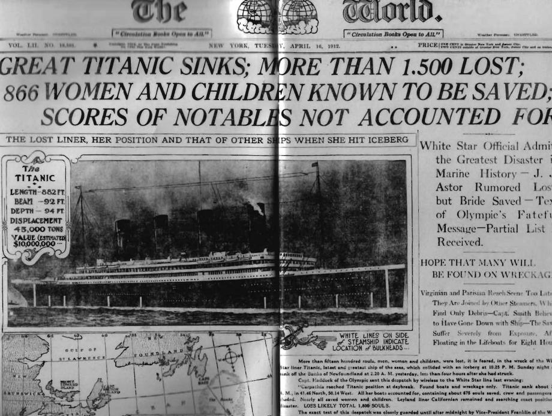
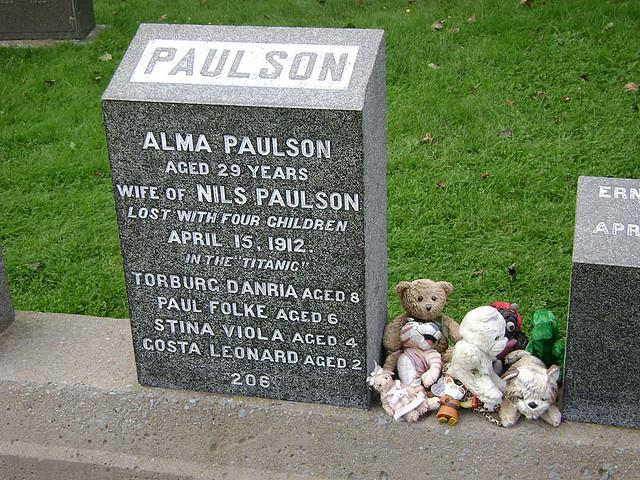

Data Tell Stories – Statistics will help Unveiling these Stories
1 Motivational Example
Your task is to uncover the story, which led to the data shown in the table below. The data were generated from a real major event that took place within the last century.
1.1 Instructions
Look at both tables carefully and quietly think about them for a few minutes:
- What do these tables show?
- Do you see any outstanding patterns?
Group Activity:
Break up into groups; I will answer one question per group with either “yes” or “no”:
- Your questions should successively narrow down which event may have led to the given data.
- Your questions are testing hypotheses about how, where, when and why the data were generated.
- With each of my answers, you may increase your knowledge about the underlying event, which in turn will help you to revise your guesses and will lead to more specific hypothesis about the underlying event.
After each group has asked its question, discuss within your group what event potentially has generated the observed data and how you justify your answer. Write down your answer.
Note: If you think you know what the underlying event was, please do not spoil the fun for the remaining participants and remain quiet until the end.
2 The Mystery Data
Data relate to a “famous” event that happened within the last century
2.1 Table 1: Death Rates by Economic Status and Sex
| Economic Status | Population Exposed to Risk | Number of Deaths | Deaths per 100 Exposed to Risk | ||||||
|---|---|---|---|---|---|---|---|---|---|
| Male | Female | Both | Male | Female | Both | Male | Female | Both | |
| I (high) | 172 | 132 | 304 | 111 | 6 | 117 | 64.5% | 4.5% | 38.5% |
| II | 172 | 103 | 275 | 150 | 13 | 163 | 87.2% | 12.6% | 59.3% |
| III | 504 | 208 | 712 | 419 | 107 | 526 | 83.1% | 51.4% | 73.9% |
| Unknown | 9 | 23 | 32 | 8 | 5 | 13 | 88.9% | 21.7% | 40.6% |
| Total | 857 | 466 | 1323 | 688 | 131 | 819 | 80.3% | 28.1% | 61.9% |
2.2 Table 2: Death Rates by Economic Status and Age
| Economic Status | Population Exposed to Risk | Number of Deaths | Deaths per 100 Exposed to Risk | ||||||
|---|---|---|---|---|---|---|---|---|---|
| Male | Female | Both | Male | Female | Both | Male | Female | Both | |
| I (high) | 172 | 132 | 304 | 111 | 6 | 117 | 64.5% | 4.5% | 38.5% |
| II | 172 | 103 | 275 | 150 | 13 | 163 | 87.2% | 12.6% | 59.3% |
| III | 504 | 208 | 712 | 419 | 107 | 526 | 83.1% | 51.4% | 73.9% |
| Unknown | 9 | 23 | 32 | 8 | 5 | 13 | 88.9% | 21.7% | 40.6% |
| Total | 857 | 466 | 1323 | 688 | 131 | 819 | 80.3% | 28.1% | 61.9% |
3 Stop: Do not continue further
(until the puzzle is solved)
4 Resolving the Puzzle: Sinking of the Titanic
April 16, 1912

“GREAT TITANIC SINKS; MORE THAN 1,500 LOST; 866 WOMEN AND CHILDREN KNOWN TO BE SAVED; SCORES OF NOTABLES NOT ACCOUNTED FOR”
5 Complete Death Rates Including Passengers and Crew
5.1 Table 3: Population at Risk, Deaths, and Death Rates for the Sinking of the Titanic
5.1.1 By Economic Status and Sex
| Economic Status | Population Exposed to Risk | Number of Deaths | Deaths per 100 Exposed to Risk | ||||||
|---|---|---|---|---|---|---|---|---|---|
| Male | Female | Both | Male | Female | Both | Male | Female | Both | |
| I (high) | 180 | 145 | 325 | 118 | 4 | 122 | 65 | 3 | 37 |
| II | 179 | 106 | 285 | 154 | 13 | 167 | 87 | 12 | 59 |
| III | 510 | 196 | 706 | 422 | 106 | 528 | 83 | 54 | 73 |
| Crew | 862 | 23 | 885 | 670 | 3 | 673 | 78 | 13 | 76 |
| Total | 1731 | 470 | 2201 | 1364 | 126 | 1490 | 80 | 27 | 67 |
5.1.2 By Economic Status and Age
| Economic Status | Population Exposed to Risk | Number of Deaths | Deaths per 100 Exposed to Risk | ||||||
|---|---|---|---|---|---|---|---|---|---|
| Adult | Child | Both | Adult | Child | Both | Adult | Child | Both | |
| I (high) | 319 | 6 | 325 | 122 | 0 | 122 | 38 | 0 | 37 |
| II | 261 | 24 | 285 | 167 | 0 | 167 | 64 | 0 | 59 |
| III | 627 | 79 | 706 | 476 | 52 | 528 | 76 | 66 | 73 |
| Crew | 885 | 0 | 885 | 673 | 0 | 673 | 76 | - | 76 |
| Total | 2092 | 109 | 2201 | 1438 | 52 | 1490 | 69 | 48 | 67 |
6 Becoming Spatial: A Nautical Chart

Queen Mary 2 Navigational Track Chart showing the North Atlantic crossing route. The red circle marks the location where the RMS Titanic sank.
7 Titanic Memorial in Halifax, Nova Scotia, Canada

Top Left: Halifax Public Gardens | Top Right: Memorial for Alma Paulson (aged 29 years, wife of Nils Paulson) lost with four children on April 15, 1912 “In the Titanic” - Torburg Danira aged 8, Paul Folke aged 6, Stina Viola aged 4, Gosta Leonard aged 2

Fairview Lawn Cemetery - final resting place for 121 Titanic victims
8 Loading of the Lifeboats
8.1 Lifeboat Launch Time & Number of Occupants

*Floated off the deck half swamped; swimmers scrambled aboard.
**Floated off upside down; swimmers scrambled onto its back.
8.2 Officers in Charge and Interpretation of Loading the Captain’s Order
- First Officer Murdoch for starboard side: women and children first
- Second Officer Lightroller for port side: women and children only

Diagram from “Olympic & Titanic: Ocean Liners of the Past”
Lifeboat Layout: - Port side (left): Lifeboats 16, 14, 12, 10, 8, 6, 4, 2 - Starboard side (right): Lifeboats 15, 13, 11, 9, 7, 5, 3, 1 - Collapsible A is on the roof of the Officers Quarters, above Collapsible C - Collapsible B is above D
9 Survival Rates at Maritime Disasters

Source:
Elinder, M. and O. Erixson. Gender, Social Norms, and Survival in Maritime Disasters. Proceedings of the National Academy of Sciences, 2012, 33:13220-24
The chart compares survival rates between general maritime disasters (MS) and the Titanic across different groups:
- Crew
- Captain
- Passenger Male
- Passenger Female
- Passenger Children
The Titanic shows notably higher survival rates for women and children compared to typical maritime disasters, reflecting the enforcement of the “women and children first” protocol.
10 Key Observations from the Data
10.1 Patterns Revealed
Gender Disparity: Female death rate (28.1%) was dramatically lower than male death rate (80.3%)
Economic Class Effect:
- First class passengers had the lowest death rate (38.5%)
- Third class passengers had the highest death rate (73.9%)
Children’s Survival:
- No children died in first and second class
- 73.1% death rate among third class children
“Women and Children First”: The data strongly supports that this protocol was followed, but with significant class bias
10.2 Statistical Lessons
- Data can tell powerful stories when properly analyzed
- Cross-tabulation reveals patterns invisible in aggregate statistics
- Multiple variables (sex, age, economic class) interact to determine outcomes
- Historical context is essential for interpretation